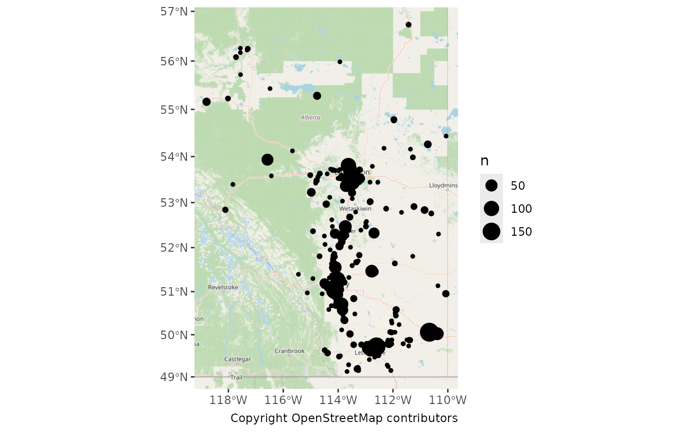
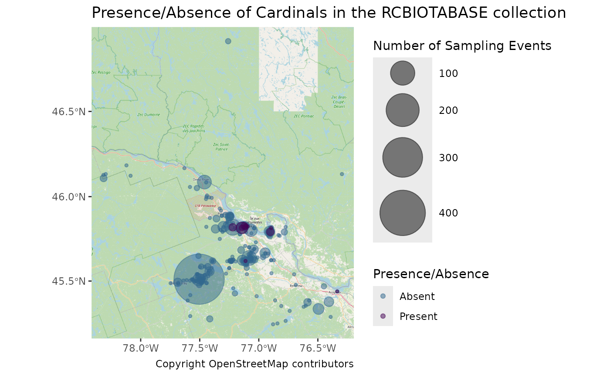

Mapping Observations
2024-11-26
Source:vignettes/articles/mapping-observations.Rmd
mapping-observations.RmdIn this article we’ll walk through how to create various types of
maps of the observations downloaded with naturecounts to
get a sense of the spatial distribution.
The following examples use the “testuser” user which is not available to you. You can quickly sign up for a free account of your own to access and play around with these examples. Simply replace
testuserwith your own username.
Setup
To do so we’re going to use the following packages:
library(naturecounts)
library(sf)
library(rnaturalearth)
library(ggplot2)
library(ggspatial)
library(dplyr)
library(tidyr)
library(mapview)First we’ll use download some data:
house_finches <- nc_data_dl(species = 20350, region = list(statprov = "AB"),
username = "testuser", info = "nc_tutorial")## Using filters: species (20350); fields_set (BMDE2.00-min); statprov (AB)## Collecting available records...## collection nrecords
## 1 ABATLAS1 10
## 2 ABATLAS2 202
## 3 ABBIRDRECS 4
## 4 BBS 14
## 5 BBS50-CAN 41
## 6 GBIF_50C9509D 799
## ...
## Total records: 7,211##
## Downloading records for each collection:## ABATLAS1## Records 1 to 10 / 10## ABATLAS2## Records 1 to 202 / 202## ABBIRDRECS## Records 1 to 4 / 4## BBS## Records 1 to 14 / 14## BBS50-CAN## Records 1 to 41 / 41## GBIF_50C9509D## Records 1 to 799 / 799## GBIF_6AC3F774## Records 1 to 1 / 1## GBIF_8A863029## Records 1 to 19 / 19## GBIF_B1047888## Records 1 to 2 / 2## PFW## Records 1 to 5000 / 6110## Records 5001 to 6110 / 6110## WILDTRAX1## Records 1 to 7 / 7## WILDTRAX19## Records 1 to 1 / 1## WILDTRAX41## Records 1 to 1 / 1
head(house_finches)## record_id collection project_id protocol_id protocol_type species_id
## 1 225617858 ABATLAS1 1048 NA NA 20350
## 2 225620472 ABATLAS1 1048 NA NA 20350
## 3 225630776 ABATLAS1 1048 NA NA 20350
## 4 225655455 ABATLAS1 1048 NA NA 20350
## 5 225665275 ABATLAS1 1048 NA NA 20350
## 6 225671997 ABATLAS1 1048 NA NA 20350
## statprov_code country_code SiteCode latitude longitude bcr subnational2_code
## 1 AB CA 1547 56.17056 -117.5639 6 CA.AB.19
## 2 AB CA 1548 56.26028 -117.5650 6 CA.AB.17
## 3 AB CA 2991 51.29972 -114.9200 6 CA.AB.15
## 4 AB CA 4156 50.03028 -113.5828 11 CA.AB.03
## 5 AB CA 5307 49.87333 -112.1828 11 CA.AB.02
## 6 AB CA 1536 56.07972 -117.7228 6 CA.AB.19
## iba_site utm_square survey_year survey_month survey_week survey_day
## 1 N/A 11UMC62 1990 5 2 12
## 2 N/A 11UMC63 1991 5 2 12
## 3 N/A 11UPS48 1988 6 2 10
## 4 N/A 12UUA14 1990 8 2 9
## 5 N/A 12UVA12 1989 1 1 1
## 6 N/A 11UMC51 1990 NA NA NA
## breeding_rank GlobalUniqueIdentifier CatalogNumber Locality
## 1 10 URN:NatureAlberta:ABATLAS1:I4063-HOFI I4063-HOFI 11UMN62
## 2 10 URN:NatureAlberta:ABATLAS1:I5194-HOFI I5194-HOFI 11UMN63
## 3 10 URN:NatureAlberta:ABATLAS1:C2013-HOFI C2013-HOFI 11UPG48
## 4 0 URN:NatureAlberta:ABATLAS1:A4101-HOFI A4101-HOFI 12UUL14
## 5 0 URN:NatureAlberta:ABATLAS1:B3021-HOFI B3021-HOFI 12UVL12
## 6 40 URN:NatureAlberta:ABATLAS1:I4060-HOFI I4060-HOFI 11UMN51
## TimeCollected CollectorNumber FieldNumber Remarks ProjectCode
## 1 <NA> 1960 NA <NA> ABATLAS1
## 2 <NA> 1960 NA <NA> ABATLAS1
## 3 <NA> 1317 NA <NA> ABATLAS1
## 4 <NA> 1128 NA <NA> ABATLAS1
## 5 <NA> 1250 NA <NA> ABATLAS1
## 6 <NA> 1941 NA <NA> ABATLAS1
## ProtocolType ProtocolCode ProtocolURL SurveyAreaIdentifier
## 1 Breeding Bird Atlas <NA> <NA> 1547
## 2 Breeding Bird Atlas <NA> <NA> 1548
## 3 Breeding Bird Atlas <NA> <NA> 2991
## 4 Breeding Bird Atlas <NA> <NA> 4156
## 5 Breeding Bird Atlas <NA> <NA> 5307
## 6 Breeding Bird Atlas <NA> <NA> 1536
## SamplingEventIdentifier SamplingEventStructure RouteIdentifier
## 1 I4063 <NA> <NA>
## 2 I5194 <NA> <NA>
## 3 C2013 <NA> <NA>
## 4 A4101 <NA> <NA>
## 5 B3021 <NA> <NA>
## 6 I4060 <NA> <NA>
## TimeObservationsStarted TimeObservationsEnded DurationInHours
## 1 <NA> <NA> <NA>
## 2 <NA> <NA> <NA>
## 3 <NA> <NA> <NA>
## 4 <NA> <NA> <NA>
## 5 <NA> <NA> <NA>
## 6 <NA> <NA> <NA>
## TimeIntervalStarted TimeIntervalEnded TimeIntervalsAdditive NumberOfObservers
## 1 <NA> <NA> NA 0
## 2 <NA> <NA> NA 0
## 3 <NA> <NA> NA 1
## 4 <NA> <NA> NA 0
## 5 <NA> <NA> NA 0
## 6 <NA> <NA> NA 0
## NoObservations ObservationCount ObservationDescriptor ObservationCount2
## 1 <NA> <NA> <NA> <NA>
## 2 <NA> <NA> <NA> <NA>
## 3 <NA> <NA> <NA> <NA>
## 4 <NA> <NA> <NA> <NA>
## 5 <NA> <NA> <NA> <NA>
## 6 <NA> <NA> <NA> <NA>
## ObservationDescriptor2 ObservationCount3 ObservationDescriptor3
## 1 <NA> <NA> <NA>
## 2 <NA> <NA> <NA>
## 3 <NA> <NA> <NA>
## 4 <NA> <NA> <NA>
## 5 <NA> <NA> <NA>
## 6 <NA> <NA> <NA>
## ObservationCount4 ObservationDescriptor4 ObservationCount5
## 1 <NA> <NA> <NA>
## 2 <NA> <NA> <NA>
## 3 <NA> <NA> <NA>
## 4 <NA> <NA> <NA>
## 5 <NA> <NA> <NA>
## 6 <NA> <NA> <NA>
## ObservationDescriptor5 ObservationCount6 ObservationDescriptor6
## 1 <NA> <NA> <NA>
## 2 <NA> <NA> <NA>
## 3 <NA> <NA> <NA>
## 4 <NA> <NA> <NA>
## 5 <NA> <NA> <NA>
## 6 <NA> <NA> <NA>
## AllIndividualsReported AllSpeciesReported
## 1 <NA> Unknown
## 2 <NA> Unknown
## 3 <NA> Unknown
## 4 <NA> Unknown
## 5 <NA> Unknown
## 6 <NA> UnknownSimple Maps
Here we’re going to take a quick look at the spatial distribution
using ggplot2 and ggspatial to get some
basemaps.
First let’s get an idea of how many distinct points there are (often multiple observations are recorded for the same location).
nrow(house_finches)## [1] 7211## [1] 1263So we have 1263 sites for 7211 observations.
Next let’s convert our data to spatial data so we can plot it
spatially (i.e. make a map!). Note that we’re using CRS EPSG code of
4326 because that’s reflects unprojected, GPS data in lat/lon. First we
omit NAs because sf data frames cannot have
missing locations.
house_finches <- drop_na(house_finches, "longitude", "latitude")
house_finches_sf <- st_as_sf(house_finches,
coords = c("longitude", "latitude"), crs = 4326)Now we’re ready to make a map of the distribution of observations.
We’ll use a baselayer from OpenStreetMap and then add our observations.
ggplot() +
annotation_map_tile(type = "osm", zoomin = 0) +
geom_sf(data = house_finches_sf) +
labs(caption = "Copyright OpenStreetMap contributors")## Zoom: 6## Fetching 12 missing tiles## | | | 0% | |====== | 8% | |============ | 17% | |================== | 25% | |======================= | 33% | |============================= | 42% | |=================================== | 50% | |========================================= | 58% | |=============================================== | 67% | |==================================================== | 75% | |========================================================== | 83% | |================================================================ | 92% | |======================================================================| 100%## ...complete!Let’s count our observations for each site.
cnt <- house_finches_sf |>
count(geometry)
ggplot() +
annotation_map_tile(type = "osm", zoomin = 0) +
geom_sf(data = cnt, aes(size = n)) +
labs(caption = "Copyright OpenStreetMap contributors")## Zoom: 6
Interactive Maps
If we want to get fancy we can also create interactive maps using the
mapview packages (see also the leaflet for R
package).
More Complex Maps
For more complex, or detailed maps, we can use a variety of spatial data files to layer our data over maps of the area.
For this we’ll get some outlines of Canada and it’s Provinces and
Territories from rnaturalearth.
canada <- ne_states(country = "canada", returnclass = "sf") |>
st_transform(3347)
ggplot() +
theme_bw() +
geom_sf(data = canada)
Let’s add our observations (note that the data are transformed to
match the projection of the first layer, here the canada
data).
We can also focus on Alberta
ab <- filter(canada, name == "Alberta")
ggplot() +
theme_bw() +
geom_sf(data = ab) +
geom_sf(data = house_finches_sf, size = 0.5)Perhaps we should see how these observations are distributed among Alberta’s Bird Conservation Regions (BCRs).
First we’ll grab the BCR shape file from Birds Canada1.
download.file("https://birdscanada.org/download/gislab/bcr_terrestrial_shape.zip", "bcr_terrestrial_shape.zip")
unzip("bcr_terrestrial_shape.zip")
bcr <- st_read("BCR_Terrestrial/BCR_Terrestrial_master.shp") |>
filter(PROVINCE_S == "ALBERTA") |>
st_transform(3347)## Reading layer `BCR_Terrestrial_master' from data source
## `/home/runner/work/naturecounts/naturecounts/vignettes/articles/BCR_Terrestrial/BCR_Terrestrial_master.shp'
## using driver `ESRI Shapefile'
## Simple feature collection with 373 features and 11 fields
## Geometry type: MULTIPOLYGON
## Dimension: XY
## Bounding box: xmin: -179.1413 ymin: 14.53287 xmax: 179.7785 ymax: 83.11063
## Geodetic CRS: NAD83Add this layer to our plot.
ggplot() +
theme_bw() +
geom_sf(data = ab) +
geom_sf(data = bcr, aes(fill = factor(BCR)), alpha = 0.5, colour = NA) +
geom_sf(data = house_finches_sf, size = 0.5) +
scale_fill_viridis_d(name = "BCR")
Some of the border cases are a bit hard to separate visually. To solve this problem, we can merge our observations with the BCRs and plot the observations by BCR as well.
First we’ll transform our observation data to match the CRS of
bcr, then we’ll join the BCR information to our
observations, based on whether the observations overlap a BCR polygon
(by default this is a left join). Now we have a BCR designation for each
observation.
house_finches_sf <- house_finches_sf |>
st_transform(st_crs(bcr)) |>
st_join(bcr)Those border cases are now resolved.
ggplot() +
theme_bw() +
geom_sf(data = ab) +
geom_sf(data = bcr, aes(fill = factor(BCR)), alpha = 0.25, colour = NA) +
geom_sf(data = house_finches_sf, aes(fill = factor(BCR)), shape = 21) +
scale_fill_viridis_d(name = "BCR")We might also be interested in observations over time.
First we’ll bin our yearly observations
house_finches_sf <- mutate(house_finches_sf,
years = cut(survey_year,
breaks = seq(1960, 2010, 10),
labels = seq(1960, 2000, 10), right = FALSE))We’ll also want to see how many sample years there are per decade.
years <- house_finches_sf |>
group_by(years) |>
summarize(n = length(unique(survey_year)), .groups = "drop")Now we can see how House Finch observations change over the years
ggplot() +
theme_bw() +
geom_sf(data = ab) +
geom_sf(data = bcr, aes(fill = factor(BCR)), alpha = 0.5, colour = NA) +
geom_sf(data = house_finches_sf, size = 0.5) +
scale_fill_viridis_d(name = "BCR") +
geom_sf_text(data = years, x = 4427134, y = 2965275, hjust = 0, vjust = 1,
aes(label = paste0("n = ", n))) +
facet_wrap(~years)Presence/Absence
We can also use some of the naturecounts helper
functions to create presence/absence maps.
Here we download data from the RCBIOTABASE collection,
make sure to keep only observations where all species and the location
were reported, create a new presence column which is either
TRUE, FALSE, or NA for each sampling event. Finally we use the
format_zero_fill() function to fill in sampling events
where cardinals (species_id 19360) were not detected
(presence would then be 0).
cardinals <- nc_data_dl(collection = "RCBIOTABASE", username = "testuser",
info = "nc_tutorial")## Using filters: collections (RCBIOTABASE); fields_set (BMDE2.00-min)## Collecting available records...## collection nrecords
## 1 RCBIOTABASE 12863
## Total records: 12,863##
## Downloading records for each collection:## RCBIOTABASE## Records 1 to 5000 / 12863## Records 5001 to 10000 / 12863## Records 10001 to 12863 / 12863
cardinals_zf <- cardinals |>
filter(AllSpeciesReported == "Yes", !is.na(latitude), !is.na(longitude)) |>
group_by(species_id, AllSpeciesReported, SamplingEventIdentifier) |>
summarize(presence = sum(as.numeric(ObservationCount)) > 0, .groups = "drop") |>
format_zero_fill(species = 19360, by = "SamplingEventIdentifier",
fill = "presence")## - Converted 'fill' column (presence) from logical to numericA bit convoluted, but here we’ll grab coordinates for each Sampling Event. This is only necessary if there are errors (worth reporting!) where there are more than one lat/lon combo for each sampling event.
coords <- cardinals |>
select("SamplingEventIdentifier", "latitude", "longitude") |>
group_by(SamplingEventIdentifier, latitude, longitude) |>
mutate(n = n()) |> # Count number of unique coordinates
group_by(SamplingEventIdentifier) |>
slice_max(n, with_ties = FALSE) |> # Grab the most common coordinates for each event
select(-"n")
cardinals_zf <- left_join(cardinals_zf, coords, by = "SamplingEventIdentifier")
head(cardinals_zf)## SamplingEventIdentifier species_id presence latitude longitude
## 1 RCBIOTABASE-10000-1 19360 0 45.58604 -77.48721
## 2 RCBIOTABASE-10001-1 19360 0 45.51110 -77.50533
## 3 RCBIOTABASE-10002-1 19360 0 45.50803 -77.50786
## 4 RCBIOTABASE-10003-1 19360 0 45.51110 -77.50533
## 5 RCBIOTABASE-10004-1 19360 0 45.51110 -77.50533
## 6 RCBIOTABASE-10005-1 19360 0 45.51110 -77.50533Now that we have our presence/absence data for cardinals, we can create a map.
cnt <- st_as_sf(cardinals_zf, coords = c("longitude", "latitude"), crs = 4326) |>
group_by(presence) |>
count(geometry)
ggplot() +
annotation_map_tile(type = "osm", zoomin = 0) +
geom_sf(data = cnt, aes(size = n, colour = factor(presence)), alpha = 0.5) +
scale_colour_manual(name = "Presence/Absence", values = c("#31688E", "#440154"),
labels = c("1" = "Present", "0" = "Absent")) +
scale_size_continuous(name = "Number of Sampling Events", range = c(1, 20)) +
labs(caption = "Copyright OpenStreetMap contributors",
title = "Presence/Absence of Cardinals in the RCBIOTABASE collection")## Zoom: 9## Fetching 16 missing tiles## | | | 0% | |==== | 6% | |========= | 12% | |============= | 19% | |================== | 25% | |====================== | 31% | |========================== | 38% | |=============================== | 44% | |=================================== | 50% | |======================================= | 56% | |============================================ | 62% | |================================================ | 69% | |==================================================== | 75% | |========================================================= | 81% | |============================================================= | 88% | |================================================================== | 94% | |======================================================================| 100%## ...complete!
Clean up the mapping files if you no longer need them
unlink("alberta_parks/", recursive = TRUE)